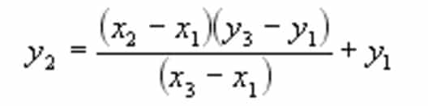
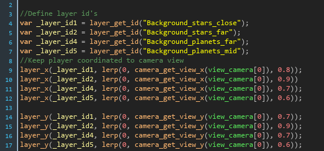

Blog Posts
Parallax scrolling"
What is parallax scrolling?
Parallax scrolling is a technique where images that are supposed to be further away move slower than images that are nearby, or closer to the viewer. This is used to create an illusion of depth, in games it can play a big role in creating immersion into the game world.
Parallax scrolling in games is nothing new, it has been around for decades! Nowadays it is used in all sorts of games and websites.
There are four types of parallax scrolling, this post will take a look at the "Layered Method". The layered method is based on the concept that foreground layers move faster than background layers.

An image of the multiple layers in a game called "The Whispered World" that were used to create parallax scrolling.
The use of specific layers is very important, especially for parallax scrolling. You have to make sure that every layer contains objects/scenery that should be at the same distance from the camera.
Implementing parallax scrolling.
I will use GML (Game Maker Language) to demonstrate implementing parallax scrolling, note that this should not make a large difference because the concept remains the same, as such I will attempt to explain the concept rather than the implementation in Game Maker.
In order to implement parallax scrolling we can use linear interpolation, often referred to as lerp. It is a function that takes three arguments: two values and the amount to interpolate. It can be used to predict where an object is going to be based on the data that you have. It can also be used to fill/predict missing data assuming the data progresses linearly.

Assume we have three coordinates of which we have the data of two, x1,y1 and x3, y3 which have the values of 1,1 and 3,3. How could we calculate the point in the center?
Note that in order to get the y2 coordinate, we need to know five values. Do you remember how Game Maker requires a percentage to be given as a parameter? This is used to determine the value of the x2 coordinate (or the y2 coordinate) in the formula. Rather than 5 values, Game Maker only requires two, because it is used for two positions which are either x or y. If you want to know a complete coordinate you have to use the lerp function twice, one for the x value that you want to know and one for the y value that you want to know.
But what does lerp have to do with parallax scrolling? We are going to move the layers relative to the camera! Imagine we have our camera origin at (x1, y1) (0,0). What if the camera is moved to (10,10) because the player moved? We can linearly interpolate the background layers to a certain point based on the amount the player has moved! We can determine a given percentage for every layer we have! Imagine we have three layers. One layer is supposed to be at the same depth as the player, we simply move the layer with the player so we don't need linear interpolation. The second and third layer are much further away, so we could move these layers 70 and 80 percent of the distance towards the new camera position. A layer that is further away should seem to move more slowly, which means the percentage should be lower, as it will result in a smaller distance between two points.
In the script you can see the first step is to define the different layers. Each layer contains stars and planets that are supposed to be at different distances from the camera. When the camera moves we move the entire layer a percentage relative to the distance that the camera moved from it's origin to the new point. The origin (0,0) is given as the first parameter. The second parameter is either the x position or the y position of the camera. The third parameter is the percentage that we want to move the layer represented by a unit interval. We do this for all the layers that we have and we can get very cool looking effects. This doesn't just work for top-down games, it can be used for all sorts of games like side-scrollers and platformers. You can apply the same principe to your website!
HTML/CSS/JS linear interpolation: https://codepen.io/ma77os/pen/KGIEh
HTML/CSS/JS parallax scrolling: https://codepen.io/ungmo2/pen/vXkrEj

Wrapping up
That's it for the post on parallax scrolling! I hope you enjoyed reading this, if you have any suggestions, questions or feedback do not hesitate to send me an email!
Contact Me
vincent@pcs.nl
Zuid-Holland, The Netherlands
0612079076